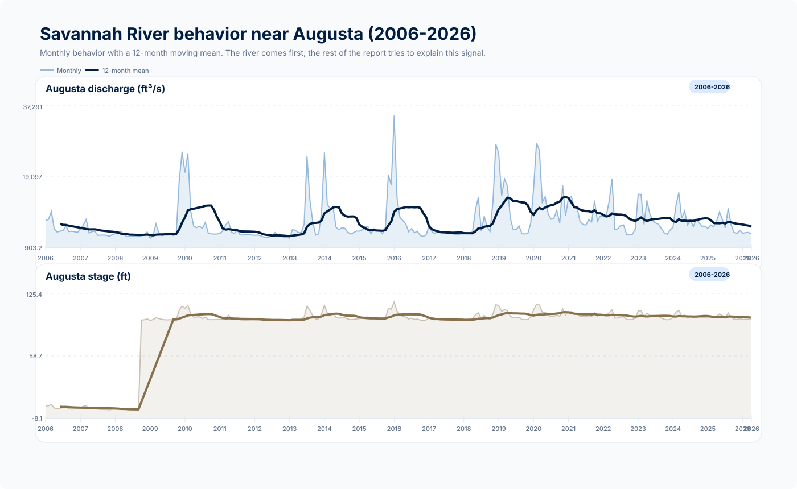
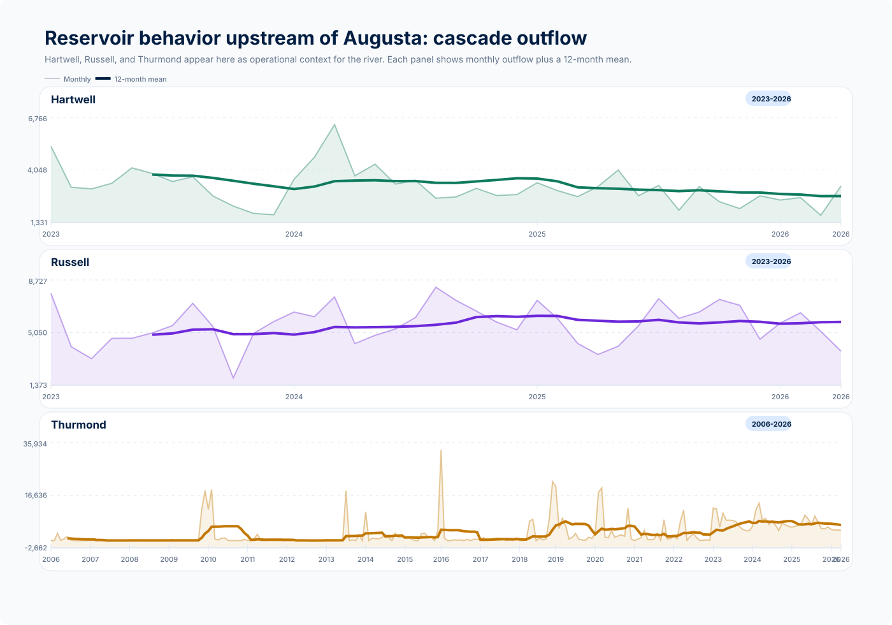
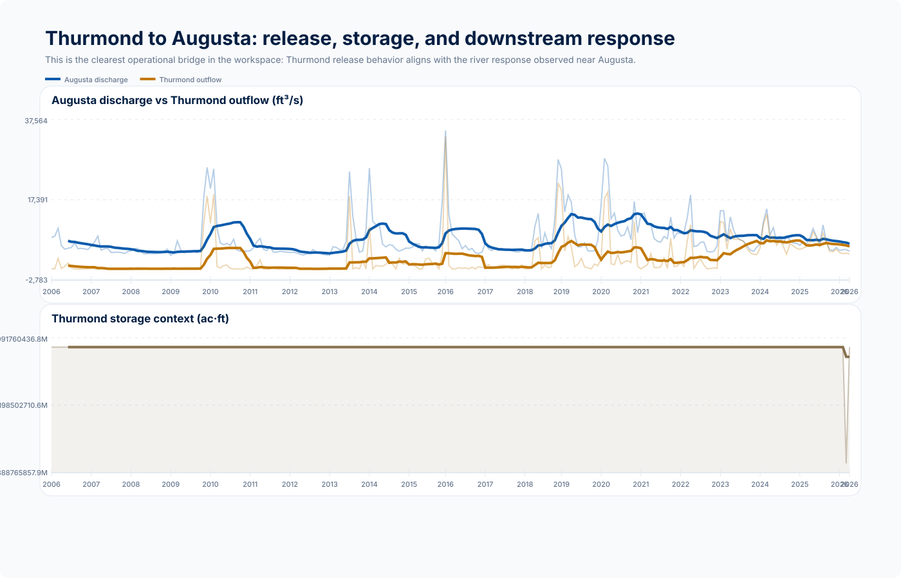
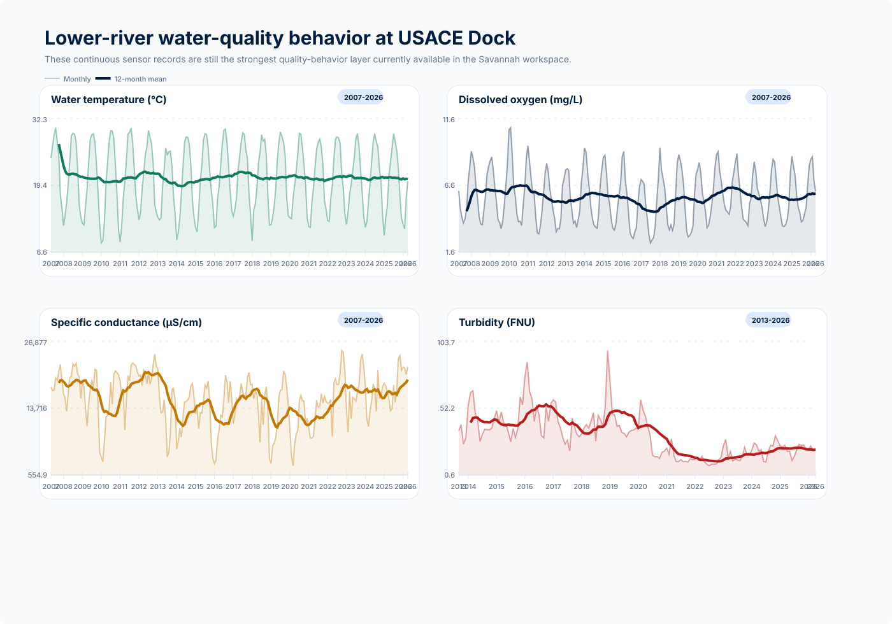
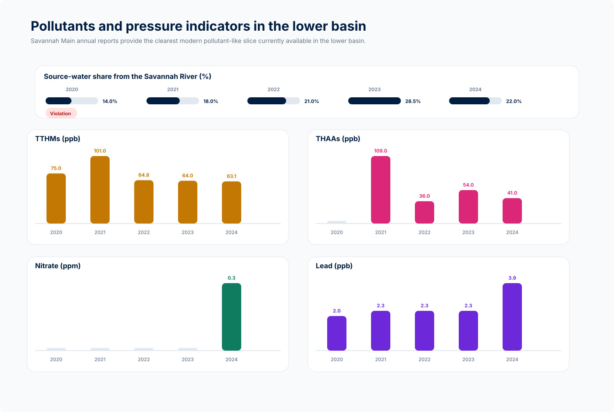
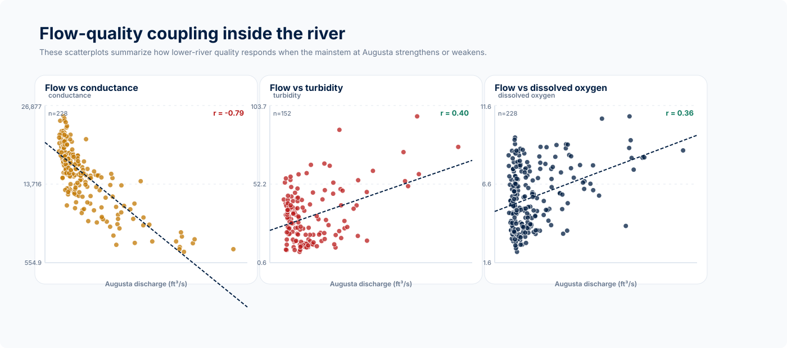
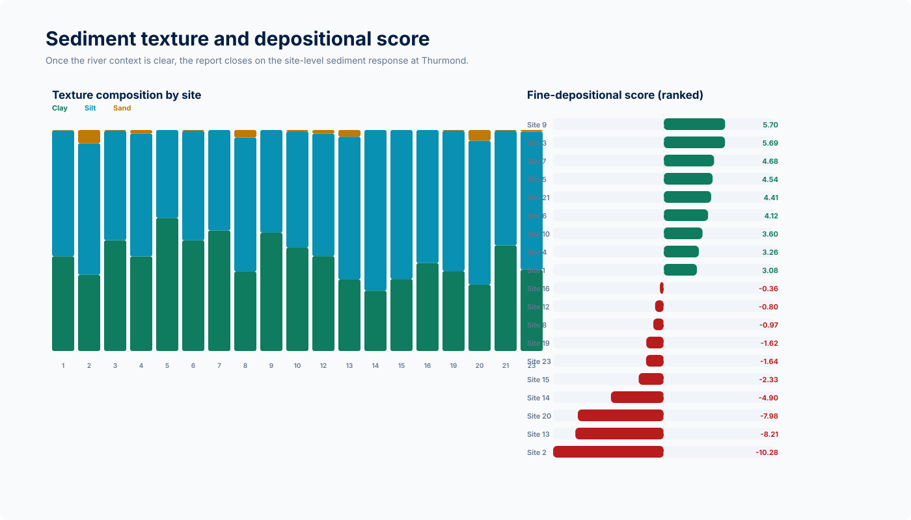
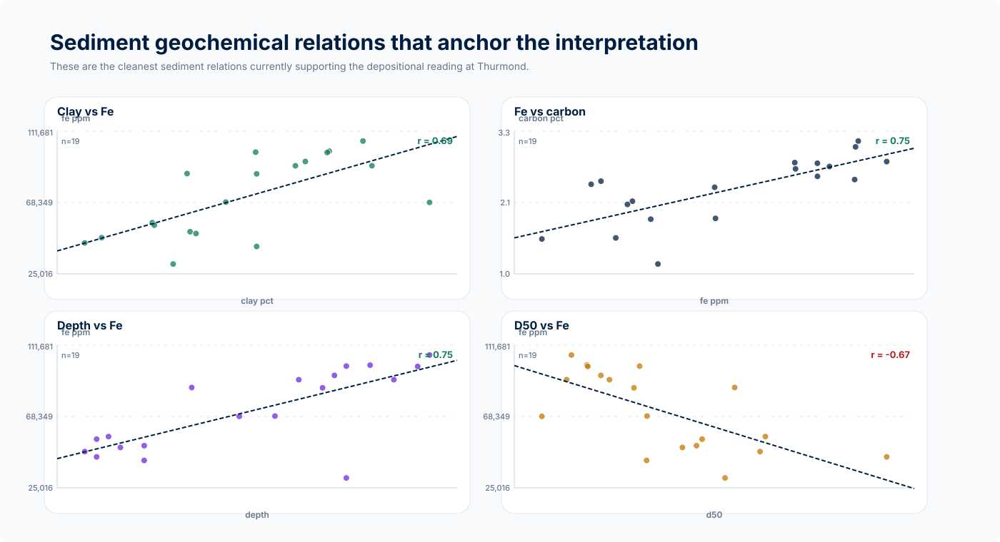

visibility How to read this page
The page is organized as a visual reading of river behavior first, then lower-river quality, reservoir regulation, and the sediment response that Thurmond still needs to explain.


Exploratory Data Report - Savannah River Mainstem
This report is meant to tell a simple river story before it reaches the sediment notebook. It starts with the Savannah River near Augusta, then adds the reservoir cascade upstream of that reach, then turns to the pollutant and pressure-like signals we currently have for the lower basin, and only...
13/13
operational-collect-savannah-river-20260410-204518
2006-2026
2 official river endpoints returned multi-year daily data
2007-2026
USACE Dock carries continuous water temperature, DO, conductance, pH and turbidity behavior
r=-0.79
Augusta discharge vs Dock specific conductance
visibility How to read this page
The page is organized as a visual reading of river behavior first, then lower-river quality, reservoir regulation, and the sediment response that Thurmond still needs to explain.
timeline Coverage note
Always request a 20-year historical window when the source allows it, and separate the returned coverage from the target.
USGS daily river endpoints meet the target window (2006-2026), lower-river continuous quality extends across 2007-2026, and the best river-to-sensor monthly coupling is Augusta...
River: operational-collect-savannah-river-20260410-204518 | Annex: operational-collect-savannah-system-20260409-013209
Available data
River core
Available window: 2006-2026
datasetAvailable data
linkSources
waterservices.usgs.gov, waterdata.usgs.gov, waterqualitydata.us
Canonical annual layer for river x pressure and river x compliance crossings.
Pressure core
Available window: 2020-2024
datasetAvailable data
linkSources
City of Savannah Water Quality Reports, epd.georgia.gov, echo.epa.gov, hec.usace.army.mil, 19january2021snapshot.epa.gov
Lower-basin treated-water compliance layer; pressure-like, but not raw-river chemistry.
Reservoir annex
Available window: 2006-2026
datasetAvailable data
linkSources
water.usace.army.mil, nid.sec.usace.army.mil, waterqualitydata.us
Reservoir annex for monthly modulation of the river signal.
Sediment response
Available window: 2026-2026
datasetAvailable data
linkSources
Analise_sedimentos notebook, Master Data Clarks Hill Lake
Interpretive bridge layer for sediment-facing summaries used by the report.
River Frame

descriptionWhat it shows
The opening panel now looks like a river-behavior chart instead of a data-inventory panel: monthly discharge and stage at Augusta, each with a 12-month mean.
lightbulbWhy it matters
This is the mainstem reference for the whole report. Before we talk about reservoirs, pressures, or sediments, we first show how the river itself expands, contracts, and stabilizes across the 20-year window.
flag Main takeaway
Augusta contributes a continuous 2006-2026 behavior record.
Image ready - 3 source reference(s)
Reservoir Annex

descriptionWhat it shows
The reservoir annex now starts with behavior, not cards: three clean monthly outflow panels show how the cascade is operating through time.
lightbulbWhy it matters
This is the first explanatory layer behind the river. The reservoirs are not the protagonist, but their release behavior helps frame why the Savannah signal near Augusta looks the way it does.
flag Main takeaway
Hartwell, Russell, and Thurmond now appear as time series instead of static snapshots.
Image ready - 4 source reference(s)

descriptionWhat it shows
A dedicated bridge panel now ties Thurmond outflow and storage to Augusta discharge, keeping the reservoir role explanatory and downstream-facing.
lightbulbWhy it matters
This is the cleanest operational link in the current workspace. It shows how the river signal near Augusta can carry the imprint of release behavior before the report moves into pollutants and pressures.
flag Main takeaway
Thurmond remains the strongest operational bridge into the sediment story.
Image ready - 4 source reference(s)
Pressures And Pollutants

descriptionWhat it shows
Once the behavior of the river and the cascade is clear, the report moves into the continuous quality signals we have downstream: temperature, dissolved oxygen, conductance, and turbidity.
lightbulbWhy it matters
These are still the strongest continuous water-quality-style records in the Savannah workspace. They let the report show real variation in the river corridor instead of only categorical coverage notes.
flag Main takeaway
USACE Dock contributes a continuous 2007-2026 quality-behavior layer.
Image ready - 3 source reference(s)

descriptionWhat it shows
This panel turns the modern Savannah Main reports into a visual pollutant and pressure layer, instead of leaving them as raw tables or source inventory.
lightbulbWhy it matters
It is not raw mainstem chemistry, but it is still one of the only modern time-structured pollutant-like datasets we currently have in the lower basin. It works as a practical bridge between river behavior and the pressure narrative.
flag Main takeaway
The 2020 data year remains the main modern compliance outlier in the current lower-basin slice.
Image ready - 5 source reference(s)

descriptionWhat it shows
After the time-series panels, the report closes the river-quality block with direct flow-quality relationships.
lightbulbWhy it matters
These scatterplots show which lower-river signals intensify with discharge and which oppose it. They are the clean behavioral bridge from river hydraulics into the pressure-response interpretation.
flag Main takeaway
Flow versus conductance remains the strongest current river-only coupling.
Image ready - 4 source reference(s)
Sediment Bridge

descriptionWhat it shows
The sediment notebook is materialized as a site-by-site view of texture and a composite depositional score that combines fine fraction, water content, Fe, carbon, D50, and sand.
lightbulbWhy it matters
This figure makes the notebook visible in the report itself. It shows where fine material dominates and which sites are the strongest candidates for low-energy, Fe-C enriched depositional settings.
flag Main takeaway
Sites 9, 3, 7 emerge as the strongest fine-depositional candidates in the current staging pass.
Image ready - 4 source reference(s)

descriptionWhat it shows
A multi-panel scatter view reconstructs the main sediment relations used in the notebook, including Fe vs clay, Fe vs D50, carbon vs Fe, and depth vs Fe.
lightbulbWhy it matters
These crossplots close the report's analytical loop. They show that the final sediment claim is not generic: the low-energy interpretation is supported by coherent relations between texture, iron enrichment, carbon preservation, and depth.
flag Main takeaway
The Fe-clay and Fe-carbon relations are the clearest visual anchors for the depositional interpretation at Thurmond.
Image ready - 4 source reference(s)